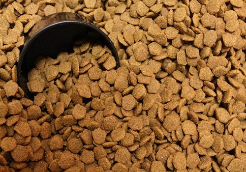
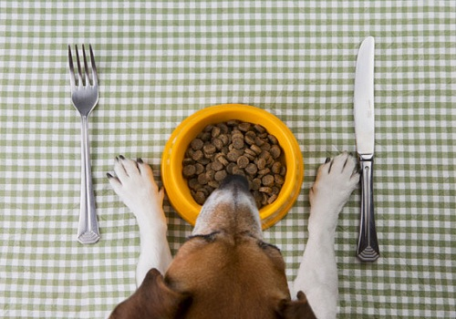
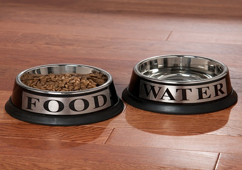
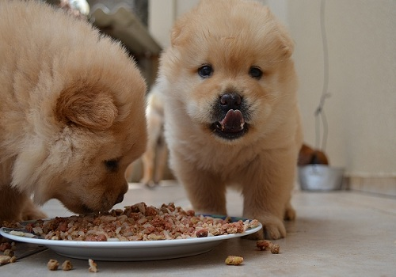

Dog's Food




1. Wellness Core: The Wellness Core product line includes seven dry dog foods, six which claim to meet AAFCO nutrient profiles for adult maintenance. This above-average dry product has a dry matter protein reading of 38%, a fat level of 13% and estimated carbohydrates of about 41%. What does this mean? The brand is way above-average with protein, near-average with fat and below-average with carbs when compared to a typical dry dog food. As you might have guessed, these are all very good things. Plus, tons of flaxseed. Yum!
Best shopping bet: Amazon.com, $53.95 for a 26 lb bag
2. Taste of the Wild: The Taste of the Wild product line includes seven dry dog foods, and they’re all pretty great. Our top pick is Taste of the Wild High Prairie Formula, which reached it’s five star rating on DogFoodAdvisor (note: not all of their products did, though none were less than 3.5). The food has a protein-boosting effect through its pea protein, peas and flaxseed, as well as a potato protein and garbanzo beans. It’s grain free, made with purified water, and suitable for pups of all ages.
Best shopping bet: PetFoodDirect.com, $44.89 for a 30 lb bag
3. Solid Gold Barking at the Moon: Solid Gold Barking at the Moon has been designed for performance dogs (that of course doesn’t mean that your pup’s gotta be training for the doggie olympics to eat it) and meets AAFCO nutrient profiles for adult maintenance. The first ingredient here is ocean fish meal, which may sound disgusting but is actually awesome because it’s considered a meat concentrate. That means it contains almost 300% more protein than fresh fish itself! Plus, unlike most fish meals, this one is ethoxyquin-free – big ups! If nothing else, the name and bag design are truly glorious.
Best shopping bet: Amazon, $85.99 for a 24 lb bag.